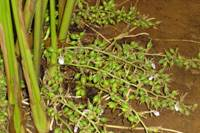
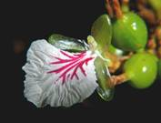
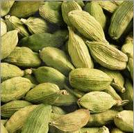
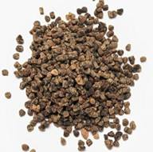
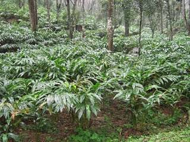
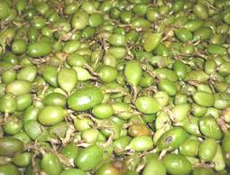
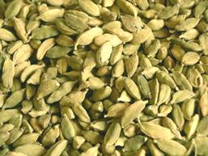

HOR 282 :: Lecture 04 :: CARDAMOM

CARDAMOM
(Elettaria cardamom, Zingiberaceae)
Cardamom, popularly known as Queen of Spices is native to the evergreen rainy forests of Western Ghats in South India. It is cultivated in about 1, 00,000 ha mainly confined to the Southern States viz; Kerala, Karnataka and Tamil Nadu accounting for 60,31 and 9% of the total area respectively. Our annual production is about 40000 metric tonnes and nearly 40% of which is exported to more than 60 countries earning a foreign exchange of nearly 60 million rupees. Cardamom is used for flavouring various preparations of food, confectionary, beverages and liquors.
Botany
Cardamom is an herbaceous perennial having underground rhizomes. The aerial pseudostem is made of leaf sheaths. Inflorescence is a long panicle with racemose clusters arising from the underground stem, but comes up above the soil. Flowers are bisexual, fragrant, fruit is trilocular capsule. Flower initiation takes place in March – April and from initiation to full bloom, it takes nearly 30 days and from bloom to maturity, it takes about 5 to 6 months. Honeybee is the principal pollinating agent and it increases the fruit set considerably when compared to flowers prevented from bee visits. Cardamom flowers remain open for about 16 to 18 hours and stigma receptivity and pollen viability are maximum during morning hours.
|
 |
 |
Four to five beehives per ha should be maintained and pesticides spraying should be maintained and pesticides spraying should be carefully monitored to avoid any damage to the bees. Large cardamom or Nepal cardamom or Great Indian cardamom is the dried fruits of Amomum subulatum. It is the native of Eastern Himalayan region and is now cultivated in Sikkim, Darjeeling and Assam hills in about 23000 ha in India with an annual production of 3250 tonnes. About 150 tonnes are annually exported earning around Rs 70 lakh. It is a perennial crop, propagated from the seeds or cut bits of the rhizome. It starts bearing in 3 to 5 years after planting and the economic age of the plantation is 12 to 15 years. The fruits are about2.5 cm long, ovoid and triangular in shape brown or pink in colour when ripe. They contain 40 to 50 seeds. Average yield is 300 to 1000 kg from 4th or 5th year.
Climate and Soil
The natural habitat of cardamom is the evergreen forests of the Western Ghats. It is grown in the areas where the annual rainfall ranges from 1500 to 4000 mm, with a temperature range of 10 to 35 C and an altitude of 600 to 1200 m above MSL. Rainfall distribution should be good and summer showers during February – April are essential for panicle initiation, otherwise it will affect the yield. With the denudation of the forests in the Western and Eastern Ghats, the favourable ecosystem has been affected destabilizing the macroclimate and rainfall in the cardamom growing tracts, resulting in poor growth and yield.
Varieties
Based on the size of the fruit, two varieties are broadly recognized via; Elaterid cardamom var. major consisting of wild indigenous types and var. minor comprising the cultivated types via; Mysore, Malabar and Vazhukka (natural breed between Mysore and Malabar). These types are identified mainly based on the nature of panicle and shape and size of fruits as follows.
Particulars |
Mysore type |
Malabar type |
Vazhukka |
Plant stature |
Robust |
Medium sized |
Robust |
Recently a number of improved cultivars have been released for cultivation.
New cardamom varieties
|
Name |
Details |
1. |
Coorg Cardamom Selection-1 (CSC-1) |
Malabar type, released by IISR, Cardamom Research Centre, Appangala an open seedling of clone no.37. 408kg dry capsules / ha. Dry recovery 22%, Essential oil content: 8.7% |
2. |
ICRI-1 |
Malabar type. Released by Indian Cardamom Research Institute, Myladumpara. 325 and 650 kg dry capsules / ha respectively under rainfed and irrigated. Dry recovery: 22.9%, Essential oil: 8.3% |
3. |
ICRI-2 |
Mysore type. Released by ICRI, Myladumparai, adaptable for Vandenmedu and Anamalai hills. 375 and 760 kg dry capsules / ha respectively under rainfed and irrigated. Dry recovery: 22.5%, Essential oil: 9% |
4. |
Mudigree-1 |
Malabar type, Released by RRS, Mudigree, suitable for Malanad region of Karnataka state. 250 to 300kg dry capsules / ha. Dry recovery: 20%, Essential oil: 8% |
5. |
PV-1 |
Malabar type. Released by Cardamom Research Station, Pampadumpara. 500 kg dry capsules / ha. Dry recovery: 20%, Essential oil: 6.8% |
6. |
SKP-14 |
Malabar type. Released by ICRI, Regional station, Saklespur, Karnataka. 430 and 590 kg dry capsules / ha respectively under rainfed and irrigated. |
7 |
IISR, Kodagu-Suvasini (CCS-1) |
Malabar type, 745 kg/ha, suitable for Karnataka, dry recovery 22%, essential oil 8.7%. |
8 |
IISR-Avinash (RR 1) |
Malabar type, 847 kg/ha, suitable for Karnataka and Wayanad, dry recovery 20.8%, essential oil 6.7%. |
9 |
IISR-Vijetha-1 |
Malabar type, 643 kg/ha, suitable for Karnataka and Wayanad, dry recovery 20.8%, essential oil 7.9%. |
Propagation and nursery
Cardamom is propagated mainly through seeds and also through suckers each consisting of atleast one old and a young aerial shoot.
1. Clonal Propagation: The suckers are commonly used for gap filling but suckers may not be available in larger numbers. Therefore, a rapid Clonal multiplication technique evolved by Indian Institute of Spice Research, Cardamom Research Centre, Appangala, is proved to be quick, reliable and economic for production of large number of quality planting materials. The site selected for this method should have a gentle slope and have a water source nearby it. Trenches of 45cm width, 45 cm depth and of any convenient length may be taken across the slope or along the contour at 1.8 m apart. The top 20 cm depth soil is excavated separately and heaped on the upper side of the trench. The lower 25 cm is excavated and heaped on the lower side of the trenches all along the line. The top soil is mixed with equal portions of top soil is mixed with equal proportions of humus rich jungle soil, sand and cattle manure and filled back by leaving a depression of 5 cm at the top to facilitate mulching for retention of soil mixture. Suckers, each consisting of one grown up tiller and a growing young shoot, are placed at a distance of 0.6 m distance in the trenches during March-October. Regular cultural operations are to be followed including high fertilizer dosed 100:50:200 kg NPK/ha in 6 split doses at 60 days interval along with Neem cake at 250 g/plant. Irrigation should be provided atleast twice in a week. Overhead pandal at a height of 3.6 m covered with coir mat or leafy twigs of any shade tree may be provided during the non-rainy season. Within a period of 12 months, a plant would produce atleast 32 to 42 suckers, which may yield atleast 16 to 21 planting units per ha of clonal nursery within 12 months of planting
2. Seed propagation: Seedlings are normally raised in primary and secondary nurseries. The nursery site should be selected on gentle sloppy lands, having an easy access to a water source. Raised beds are prepared after digging the lands to a depth of 30- 45 cm. The beds of 1 m width and convenient length raised to a height of about 30 cm are prepared. A fine layer of humus rich forest soil is spread over the beds. Seeds should be collected from well ripe capsules. Immediately after the harvesting, the husk is removed and the seeds are washed repeatedly in water for removing the mucilaginous coating. After draining the water, the seeds are to be mixed with wood ash and dried in shade for a day. In order to ensure uniform and early germination, seeds should be sown immediately after extraction. If the sowing is delayed, pre-sowing treatment of seeds with 25% Nitric acids for 10 minutes is advisable to get a quick and higher germination. One kg of seed capsule may produce 5000 seedlings (600g seeds).
 |
 |
Sowing may be taken up during November- January and is done in rows. Deep sowing of seeds has to be avoided for quick and better germination. Seedbeds are to be dusted with Lindane. Beds are mulched to a thickness of 2 cm with paddy straw or any locally available material and are watered regularly. The germination commences in about a 30 bags and may continue for a month or two. After germination, the mulch is to be removed. An overhead pandal with a height of 2 m is quite desirable. Materials like coir mat, plaited leaves or tree twigs which do not shed their leaves may be used but the coir mat is preferable as it provides uniform filtered sunlight. The excess seedlings are to be thinned out after 75-80 days sowing. The thinned out seedlings can be used for gap filling within the nursery bed or for raising secondary nursery. When the seedlings attain 5-6 leaf stages, light earthing up is to be done. This would encourage better tillering and proper growth of seedlings.
Generally in Kerala and Tamil Nadu, the seedlings are transplanted to the secondary nursery when they attain four to six leaf stages. The beds are prepared in the same manner as that of a primary nursery. The seedlings are transplanted in March- May at a spacing of 20x20 cm and mulched immediately. The beds are covered with an overhead pandal and are watered regularly. Recently, instead of raising secondary nursery beds, the seedlings are also raised in poly bags containing rich forest soil. Manuring at the rate of 90g N, 60g P2O5 and 120g K2O per bed of 5x1 size , in three equal split doses at an interval of 45 days is recommended to produce healthier seedlings. The first dose of fertilizer may be applied 30 days after transplanting in the secondary nursery. In Karnataka, ten month old seedlings are used for planting in the main yield, while in Kerala and Tamil Nadu, 18 months old seedlings are commonly used.
Preparation of land
All under growth should be cleared and excess shade trees or branches should be thinned out to have an even overhead canopy. Pits of 45x45x30 cm size are dug in April – May and filled with a mixture of top soil and compost are well-decomposed farm yard manure. In sloppy land, contour terraces may be made and pits may be taken along the contour and a close planting (2mx2m) is advisable along the contour. The spacing adopted in Karnataka for the Malabar type is 2x2 m o between plants and rows. In Kerala region 2-3 m on either side is adopted. Staggered trenches may be taken across the slope to conserve run off rainwater. The soil collected in trenches may be utilized for earthing up during the post monsoon period.
Planting
 The planting is carried out during the rainy season commencing from June. Under Eastern Ghats hills July planting is adopted. Seedlings are to be adopted. Seedlings are to be planted up to the collar region for better growth. Cloudy days with light drizzle are ideal for planting. In some parts of tea estates in South India, redgum (Eucalyptus sp) is planted in flat valley bottom at a regular spacing. Cardamom under planted in this redgum areas produce better growth as equal to natural jungle areas. Recently, mixed cropping of cardamom in Arecanut, rubber and coffee plantations is gaining an impetus especially with small growers which assure greater significance in the light of frequent dry spells and fluctuating price structure.
Mulching
It is an important cultural practice in cardamom. Fallen leaves of the shade trees are utilized for mulching. Sufficient mulch should be applied during November – December to reduce the ill effects of drought, which prevails for nearly 4 to 5 months during summer. Exposing the panicle above the mulch is beneficial for the pollination by bees.
Weeding
Depending upon the intensity on weeds, 2-3 weedings are necessary in a year. The first round of weeding is to be carried in May – June, the second in August – September and the third in December – January. In sloppy land slashing of weeds is alone to be carried out otherwise it encourages to more soil erosion. Weedicides like paraquat @ 625 ml in 500 liters of water may be sprayed in the interspaces between rows leaving 60 cm around the plant base.
Trashing
Trashing consists of removing old and drying shoots of the plant once in a year with the onset of monsoon under rainfed conditions and 2-3 times in high density plantations provided with irrigation facilities.
Shade regulation
Cardamom being a pseophyte is very sensitive to moisture stress. Shade helps to regulate soil moisture as well as temperature and provides congenial microclimate for cardamom. Excess shade is also detrimental and shade has to be regulated so as to provide 50-60% filtered sunlight. Cardamom plants can tolerate less shade in areas where well distributed and adequate rainfall is received. In South India many trees are available in the natural habitat to provide shade but an ideal shade tree should have a wide canopy, minimum side branching and it should not shed the leaves during the flowering phase of cardamom so as not to affect pollination. Some of the common shade trees in cardamom estates are Palangi (Atrocarpus fraxinifolius), Jack, Red cedar (Cedrella tuna), Karimaram (Diospyros ebenum) and Elangi (Mimusops elangi). The temporary shade trees like Erythina lithosperma and E. indica are the most unsuitable as they compete for nutrients and soil moisture.
In order to provide adequate light during monsoon, shade regulation may be taken up before the onset of monsoon. A two tier canopy with a height of not more than 3 m below the lower and higher canopy may be maintained. Areas exposed to western side should have adequate shade.
Earthing up
After the monsoon is over, a thin layer of fresh fertile soil, rich in organic matter may be earthed up at the base of the clump, covering up to the collar region by scrapping between the rows or collecting soil from staggered trenches/check pits. This encourages new growth.
Irrigation
In order to overcome the dry spell during summer, it is necessary to irrigate the crop to get maximum production as it helps in initiation of panicles, flowering and fruit set. Depending on the moisture holding capacity of soil and topography of the soil and topography of the estates, they may be irrigated at an interval of 10 to 15 days till the onset of monsoon. Sprinkler irrigation and or drip irrigation at the rate of 4 litres per clump per day during dry month’s increases the yield.
Harvesting and Processing
Cardamom plants normally start bearing two years after planting. In most of the areas the peak period of harvest is during October- November. Picking is carried out at an interval of 15-25 days. Ripe capsules are harvested in order to get maximum green colour during curing.
|
 Ripe capsules |
 |
After harvest, capsules are dried either in fuel kiln or in electrical drier or in the sun. It has been found that soaking the freshly harvested green cardamom capsules in 2%washing soda for 10 minutes prior to drying helps to retain the green colour during drying. When drier is used, it should be dried at 45 to 500C for 14 to 18 hours, while for kiln, over night drying at 50 to 600C is required. The capsule kept for drying are spread thinly and stirred frequently to ensure uniform drying. The dried capsules are rubbed with hands or coir mat or wire mesh and winnowed to remove any foreign matter. They are then sorted out according to size and colour, and stored in black polythene bag to retain the green colour during storage. These bags are then kept in wooden chambers.
Plant protection
Important pests and diseases affecting cardamom are given below with their typical damages/symptoms and control measures.
Pest/Disease |
Damage/symptoms |
Control measures |
Pests |
Adults and nymphs such sap and cause damage to leaves, shoots, inflorescence, and thrips affected capsules fetch lower price. |
Regulate shade in thickly shaded area, spray monocrotophos 0.025% during March to September |
Shoot, panicle, capsule/borer (Conogethes punctiferalis) |
Larvae bore the unopened leaf buds, panicles causing drying of feed on young seeds causing the capsules empty, incidence occur throughout year, but more pronounced during March-April, May-June and September-October. |
Spraying monocrotophos or fenthion 0.075% at early stage of infection. |
Aphids (Pentalonia nigronervosa) |
Nymphs and adults suck the sap and act as vector of the mosaic or ‘Katte’ Virus. |
Spray 0.05% dimethoate. |
Parasitic nematodes (Meloidogyne incognita) |
Occurs in nursery and main field. Poor germination and establishment in the nurseries, stunted and poor growth of plants, shedding of immature capsules in the main field, heavy galling and abnormal branching of roots. |
Treat the plants in the nursery with carbofuran 3 g @ 5 kg i.e. /ha or in the main field with carbofuran 5-g a.i./clump and apply 0.5kg of Neem cake per clump twice a year. |
Diseases |
Spindle shaped, slender chlorotic flecks appear on youngest leaves, later there develop into pale green discontinuous stripes as leaves mature, mosaic symptoms are marked, infected clumps are stunted, smaller in size, with slender tillers and shorter panicles. |
Use healthy seedlings, rougue the infected plants. |
Azhukal capsule rot (Phytophthora meadii) (P.nicotianae var. nicotianae) |
Occurs in heavy rain zones, affected capsules turn brownish black in colour, often rotting extends to tillers and rhizomes also. |
Do trashing; remove infected and dead plants etc. During pre monsoon months. Spray 1-% Bordeaux mixture during May and repeat again in August. |
Damping or rhizome rot (Pythium vexans and (Rhizoctonia solani) |
Excessive soil moisture and poor drainage favour this disease in the nursery, infected seedlings collapse at collar region and die in patches, and entire clump dies in grown up plants. |
Pre treat the nursery with 1:50 formaldehyde; drench the soil after germination with 0.2% copper oxychloride. |
*************
- Queen of spices is ____________
- Native of cardamom is _______________
- Inflorescence of cardamom is known as ______________
- Cultivated types of cardamom are _____________
- Cardamom is propagated mainly through _____________
| Download this lecture as PDF here |